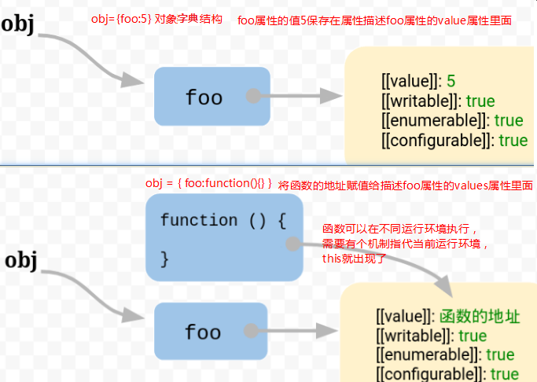
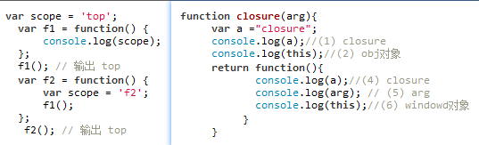
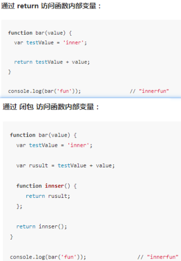
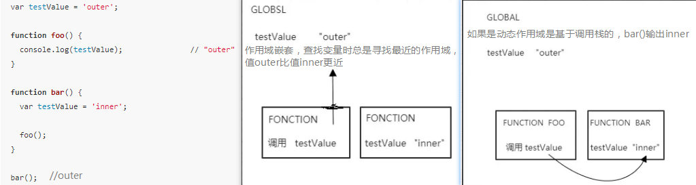
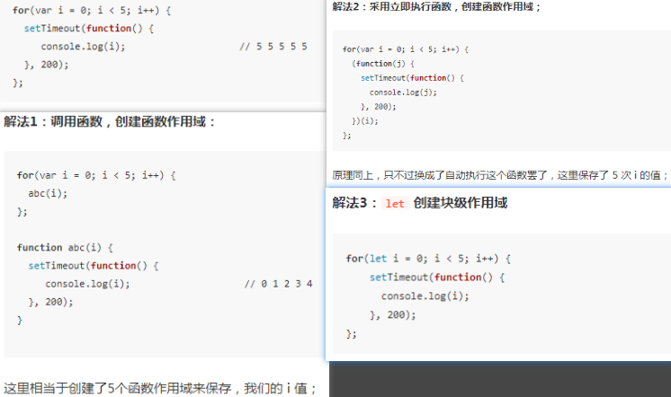

JavaScript 语言之所以有this的设计，跟内存里面的数据结构有关系。JS对象以字典结构保存，每一个属性名都对应着属性描述对象，属性值是函数地址，函数可以在不同运行环境执行，就需要一个机制来指代当前的运行的环境，this就是函数执行时运行环境的环境对象

this在面向对象语言中代表当前对象的一个引用，在JS中是随着执行环境的改变而改变的内部对象。this的改变方式就大概有三种,
第一种call，apply，bind方法this被绑定在第一个参数对象。
第二种事件方法，setTimeout和setInterval会被绑定在全局对象上，像点击事件之类的会被绑定在dom对象上。
第三种是对象方法，对象里的方法被绑定在最里面的对象上。
作用域是变量的生命周期，一个变量在哪些范围内保持一定值，一段程序代码中所用到的变量并不总是有用的，而限定这个变量的可使用范围就是这个变量的作用域，JS只有函数能划分作用域

函数作用域：外层的作用域无法直接访问函数内部的作用域

函数嵌套作用域：函数作用域的嵌套关系是在定义时调用运行前确定的，如同var变量的提升的预处理。作用域可以访问嵌套它的作用域值，而this是按着原形链去访问它父级对象。

用var关键字声明的变量在for循环后值仍然保存在全局变量里，for(){}并没有产生像函数作用域一样的效果，需要用块级作用域，let 和 const 关键字，创建块级作用域的条件是必须有一个 { } 包裹。

不带有声明关键字的变量，JS 会默认帮你声明一个全局变量，用var声明的变量会挂载到window属性，它有一个特性是不能用delete运算符删除，所以 delete一个全局变量返回的是false。不带var不会创建一个全局变量 创建的是全局属性，属性能够被delete运算符删除 。
IIEEE：imdiately invoked Function Expresion，是一个在定义的时候就立即执行的JS函数。(function(window,undefined){...})(window)，第二个圆括号是一种运算符，在函数名之后表示函数的调用，括号的参数window表示调用时传入的实参。第一个圆括号的意义是把function(){...}转化为一个可执行的函数表达式，可以是+，~等运算符。这样可以不必为函数命名，避免污染全局变量，内部形成单独的作用域可以封装一些外部无法读取的私有变量。